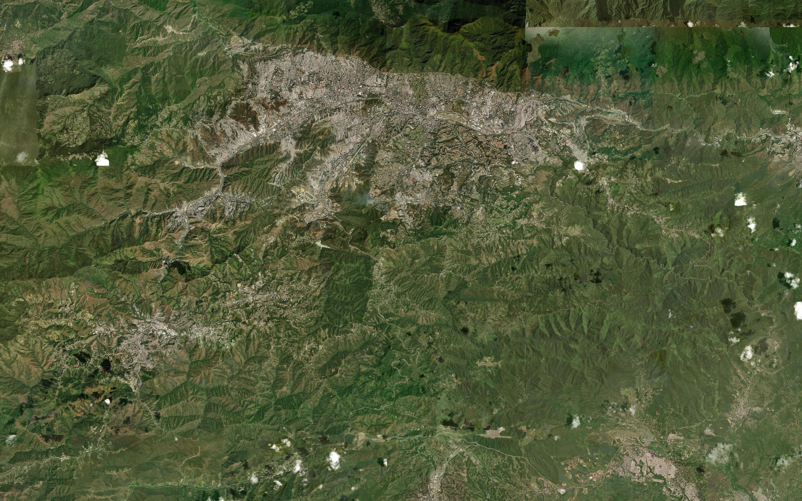

- Shell location10
- Point of view, after the raid2
- Field of view12
- Helicopter, illustrative position25
- Point of view10
Every point of view used to place the most likely capture zone on 3 January 2026, on one interactive map. Read the full analysis.

Press a point to see the video it comes from and the post that geolocates it. A camera is a point of view, and its lines frame what it films; each keeps its own colour, which the helicopters it films share.
The helicopters are drawn to help read the videos: their exact positions are not known.
Only the points that could be geolocated are on the map.
Made with Azimut 0.3.4, in development, a free, open-source OSINT workbench.